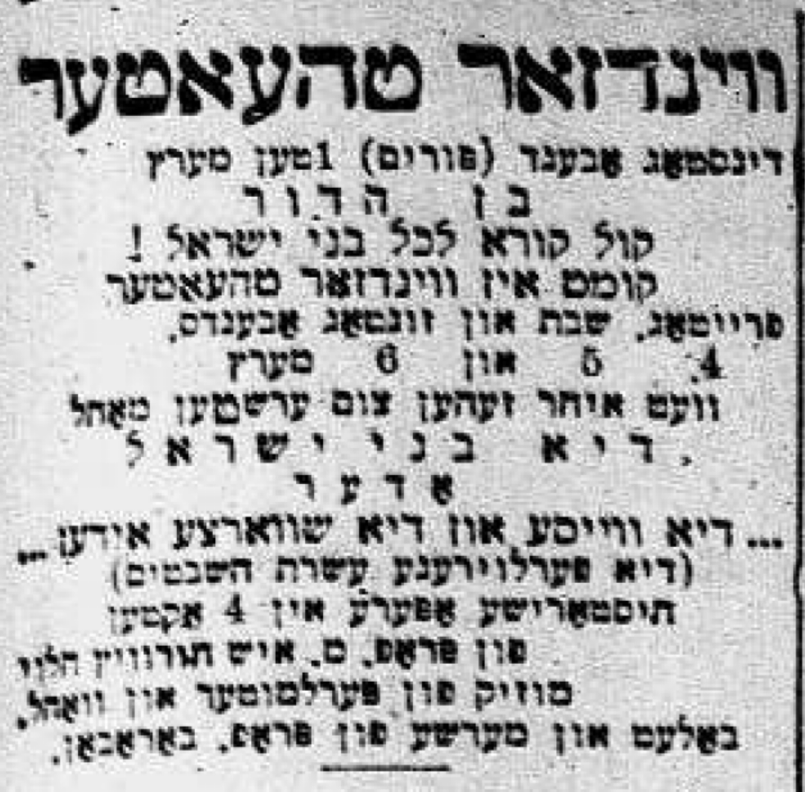

31 January 2nd, 1947
Link to Forverts edition
With Madame Kalish in Z. Libin’s play. – The end of the “Professor” who reigned for many years on the Yiddish stage.
The whole time I played in the Windsor Theater, I knew that every time we put on a new play by Horowitz, the last act would not be finished by the first performance. It became like a mineg1 which you can’t change. The “Professor” never seemed to be in a rush to write the last act, and usually he assumed that, when it came time to put on the show, we’d figure it out.
When we put on his historical operetta The White and Black Jews2, which told the story of the lost ten tribes, he also hadn’t finished the last act when it came time for the first performance. And as always, the “Professor” found a way to handle it; just as he did in Yesties Mitsraïm, at the end of The White and Black Jews he came up on stage and gave a long monologue with the words, “Jews, we are going to return to Eretz Yisroel.” When he finished the monologue, the chorus sang some song which I no longer remember, and after the performance was over, he didn’t remember at all what he said - not how he began the monologue, and not how he ended it.

We, the actors in the troupe, joked around a lot, and all in all the atmosphere was one where no one really immersed themselves in their role and everything was done haphazardly, like it was all a farce.
In those days, Jacob P. Adler parted ways with Thomashefsky and Edelstein and he began to perform in the Grand Theater on Grand Street3, and David Kessler played with him. They engaged Madame Berta Kalish to play the lead female roles. This was really a winning combination to put on serious dramas of a better sort, although the two great actors Adler and Kessler very often could not get along and they could not share the glory. Kessler loved to say that Adler was not the kind of actor who could play in a natural way, but rather he always had to do all kinds of tricks and put on airs like he wanted to go around a cloud…
Every time when the two of them performed together in a play, they would both try to “out-act” the other, and one time Kessler got up to some mischief and pulled some trick in the middle of it that made him fall out of character, and it was very hard to get back into it.4
For the new season5, Dora Weissman and I were hired to play at the Grand Theater, and I was really happy to have the opportunity to perform in better plays together with great actors like David Kessler and Jacob P. Adler. I performed in plays there like Kobrin’s East Side Ghetto6 and Z. Libin’s Helene, oder Di Yidishe Medea7.
In Libin’s play, Madame Berta Kalish played the leading role and the audiences really loved her performance. She created an interesting character of a Jewish woman because she worked really hard on the role and took everything that she had to do very seriously. Generally speaking, people in the Yiddish theater circles took Libin’s plays very seriously. He was still a young dramatist, and people had very high hopes for him.
In this play, Helene, oder Di Yidishe Medea, I played a griner Jew who carried newspapers to his regular customers and was always tired because he never got enough sleep. There was one scene where I was woken from my sleep, and I awoke with a start in such a tumult that I had no idea where I was at all. The audiences laughed a lot at how I played this scene, as I leapt up and got dressed in such a hurry that I fell all over myself, putting my left shoe on my right foot and the right shoe on my left foot.
When I played this scene, it all came very naturally to me.8 This character in Libin’s play was very dear to my heart because, all in all, he was a very sympathetic mentshl9, a nebech10 who toiled away and worked very hard to earn himself a piece of bread in America. And I remembered how every time I played the scene where I was startled awake, Madame Berta Kalish looked at me like I was a poor, sympathetic mentshl also touched her heart. You could tell that she was really pleased with how my performance showed how very flustered and lost he was.
Once, after a performance of Libin’s play, Madame Kalish ran up to my dressing room and told me that the next evening, I should come to her house.
– Dora Weissman will also be there, - she said. - My husband, Leopold Shpachner11, will see you both. He has to discuss something very important with you…
Madame Kalish didn’t tell us what Shpachner wanted to speak with us about, but we understood that it would certainly be something new. And indeed it was.
When we went to Madame Kalish’s house, Shpachner told us that next season he would be manage a new theater. He was putting together a troupe, and he wanted Dora Weissman and I to go with him.
Without missing a beat he immediately offered me sixty dollars a week, which in those days was quite a lot of money. He also offered this to Dora Weissman. And as it usually went in these situations, he promised us that he would see to it that we have good roles with lots of lines and songs to sing and dance in the plays that he staged.
But where would we play?
In Windsor Theater.
Shpachner had already seen to it that we would take over the Windsor Theater, because the “Professor” Moishe Ish Horowitz Halevy was no longer there. He had left the stage and had no further role to play…
It happened so suddenly and surprised everyone; the “Professor,” apparently, realized that, with the new winds blowing in the Yiddish theater, he was rolling more and more downhill, along with his historical and non-historical operettas and melodramas. He wasn’t able to adapt to the new ways, so he chose to take up something else. He brought over an Italian opera company from Europe, and he figured that maybe with them, he’d be able to compete with the Yiddish theater and would again be able to earn a lot of money. He figured he would became an “opera impresario” and wouldn’t have anything more to do with the Yiddish theater. As usual, his imagination ran wild. He was already building his castles in the sky, living large and traveling around in an even better carriage, with even plumper horses and a lackey too in a uniform with golden buttons.
But in a short time, he had spent all his money on the Italian opera company, including all the money he borrowed too. And the end was really very sad.
The “Professor” became paralyzed and was admitted to the Montefoire House. Impoverished, destitute, and broken, he languished there for several years. And when he died in 191012, only a few actors and others from the theater circles attended his funeral, which was held in a stable on Houston Street.
And so ended the life life of “Professor” Moishe Ish Horowitz Halevy, whose plays - which he wrote in such a hurry that he never had time to write the last act - reigned for years on the Yiddish stage. It was the end of a man in the Yiddish theater who lived so largely that people really thought of his as a wealthy magnate. He was 66 years old13.
“minhag,” a Jewish ritual/custom↩︎
Also called, The Children of Yisroel↩︎
at the corner of Grand and Chrystie Sts↩︎
The antecdents of this paragraph are very ambiguous to me, but the essence is that Kessler is mischievious and causing trouble on stage just to mess with Adler.↩︎
1904/1905↩︎
See an advertisement to a performance of this show on December 2nd-4th 1904↩︎
See an advertisement to a matinee performance of this show on December 18th, 1904↩︎
Or, he might mean here that he played it in a very natural way; Either way, his point is it wasn’t absurd slapstick.↩︎
diminutive mentsh↩︎
a pitiful, helpless person↩︎
He also managed the Grand Theater with Adler and Kessler↩︎
Here is an obituary published in the Forverts on March 5th, 1910, which details his tragic rise and fall.↩︎
Worth noting that the obituary in the Forverts says he died at age 63↩︎